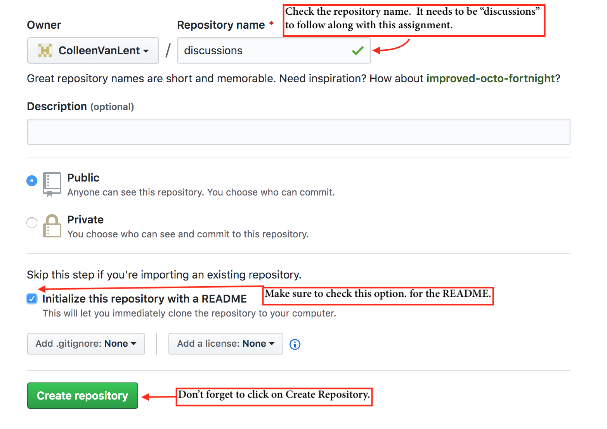
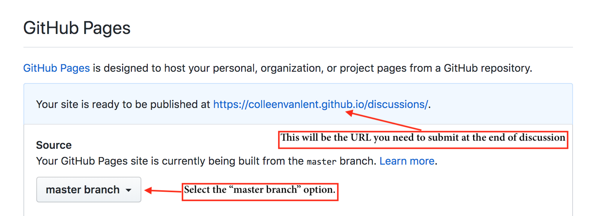

Discussion: Github and aXe
Objectives
- Obtain a Github account and create a Github Pages repository.
- Utilize the w3, aXe, and Wave validators.
- (Time permitting) Install editor (Visual Studio Code, Sublime, Atom)
Steps
- Open the file here and install aXe and WAVE (also install Chrome or Firefox if you don't have at least one).
- Open the file at https://umsicomplexwebdesign.github.io/discussions/validators/validator_test.html
- Read the instructions in the page and test each of the validators.
- Take a screenshot of the page when being tested using aXe
- Setup Github
- Setup Github Pages
- Host your screenshot
Axe
- Install Axe - https://www.deque.com/axe/
- Download the tester file from Canvas and test it.
- Take a screenshot of the results. (I called mine axe-results)
- Create a folder for this course and add a subfolder called discussions and another subfolder called validators. Save the screenshot in this folder.
Github
- If you haven’t already, create a github account - use a name you are willing to share with others!!!
Github Pages
- Create a repository called "username.github.io" - make sure that it matches your username exactly.
- Create another repository called “discussions” and make sure to check the box that says “Initialize this repository with a README”. Then click on Create Repository. 
- In the Settings for discussions, go to GitHub pages and select the box that says master branch. Make sure to note the URL, you will need to submit it.
- Return to the discussion repository and upload the CONTENTS of the discussion folder on your computer. (Again, the contents, not the folder itself.)
Other
If you have time, choose your editor and add extensions
- Atom
- BrowserPlus - https://atom.io/packages/browser-plus
- Color Picker - https://atom.io/packages/color-picker
- Sublime
- Emmet - https://emmet.io/blog/sublime-text-3/
- Color Picker - https://www.hongkiat.com/blog/sublime-text-color-addition/
- Visual Studio Code
- Live HTML Preview (Does not support Javascript) - https://marketplace.visualstudio.com/items?itemName=hdg.live-html-previewer
- weLive Server - https://marketplace.visualstudio.com/items?itemName=ritwickdey.LiveServer
Submission
In Canvas submit the link to your screenshot. You will need to append the name of your screenshot to the URL for us to view it.